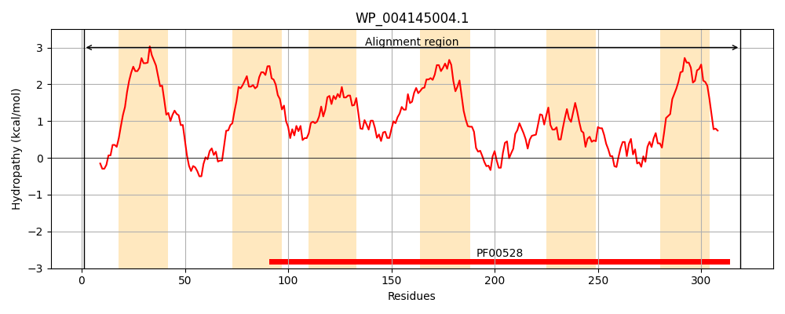
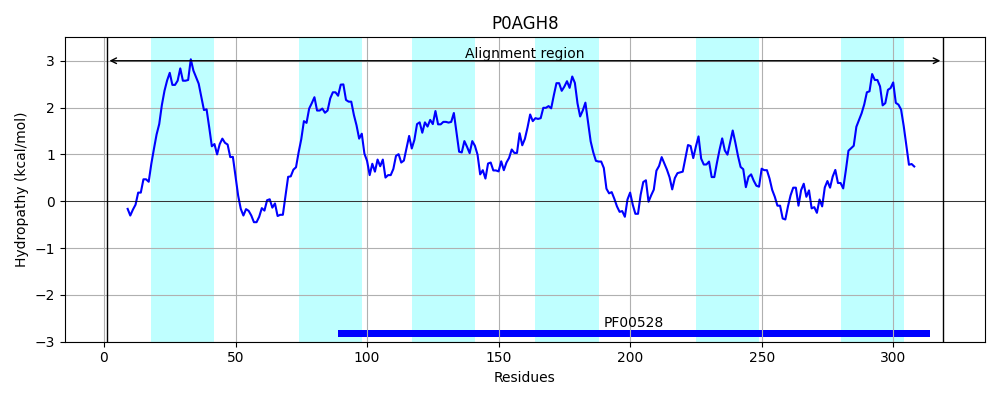
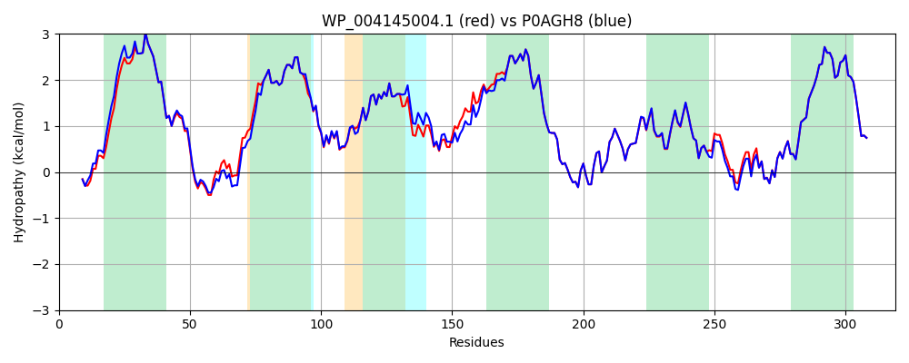

Hit Accession: P0AGH8
Hit TCID: 3.A.1.7.1
Hit Description: gnl|BL_ORD_ID|8864 gnl|TC-DB|P0AGH8|3.A.1.7.1 Phosphate transport system permease protein pstC - Escherichia coli.
Mach Len: 319
e:0.000000
Query TMS Count : 6
Hit TMS Count: 6
TMS-Overlap Score: 7.050000
Predicted Substrates:CHEBI:7793;phosphate(3-)
BLAST Alignment:
Score: 1540 , Bit scores: 597 bits, E-value: 0.0e+00, Alignment length: 319, Percentage identity: 95
Query: 1 MAATKPAFTPPGKKGDMIFSALVKLAALIVLLMLGGIIVSLIISSWPSIQKFGFAFLWTKEWDAPNEIFGALVPIYGTLVTSFIALLIAVPVSFGIALFLTELSPAWLKRPLGIAIELLAAIPSIVYGMWGLFIFAPLFATYFQEPVGNVLSTIPFVGALFAGPAFGIGILAAGVILAIMIIPYIAAVMRDVFEQTPVMMKESAYGIGCTTWEVIWRIVLPFTKNGVIGGVMLGLGRALGETMAVTFIIGNTYQLDSISLYMPGNSITSALANEFAEAETGLHVAALMELGLILFVITFIVLAASKFMIMRLAKNEGAR 319
MAATKPAF PPGKKGD+IFS LVKLAALIVLLMLGGIIVSLIISSWPSIQKFG AFLWTKEWDAPN+I+GALVPIYGTLVTSFIALLIAVPVSFGIALFLTEL+P WLKRPLGIAIELLAAIPSIVYGMWGLFIFAPLFA YFQEPVGN++S IP VGALF+GPAFGIGILAAGVILAIMIIPYIAAVMRDVFEQTPVMMKESAYGIGCTTWEVIWRIVLPFTKNGVIGG+MLGLGRALGETMAVTFIIGNTYQLDS SLYMPGNSITSALANEFAEAE+GLHVAALMELGLILFVITFIVLAASKFMIMRLAKNEGAR
Sbjct: 1 MAATKPAFNPPGKKGDIIFSVLVKLAALIVLLMLGGIIVSLIISSWPSIQKFGLAFLWTKEWDAPNDIYGALVPIYGTLVTSFIALLIAVPVSFGIALFLTELAPGWLKRPLGIAIELLAAIPSIVYGMWGLFIFAPLFAVYFQEPVGNIMSNIPIVGALFSGPAFGIGILAAGVILAIMIIPYIAAVMRDVFEQTPVMMKESAYGIGCTTWEVIWRIVLPFTKNGVIGGIMLGLGRALGETMAVTFIIGNTYQLDSASLYMPGNSITSALANEFAEAESGLHVAALMELGLILFVITFIVLAASKFMIMRLAKNEGAR 319 | Protein Hydropathy Plots: |
|---|
|  |  |
Pairwise Alignment-Hydropathy Plot:
|
|---|
|  |